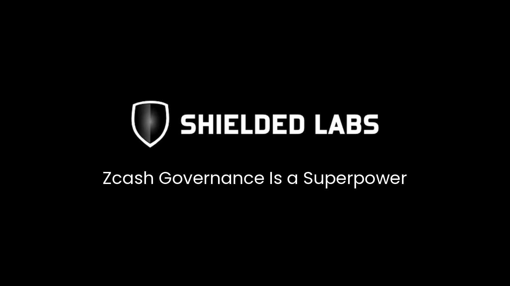

Zcash Governance Is a Superpower

There has been a lot of discussion lately about the Dev Fund, and I want to use this opportunity to share Shielded Labs’ perspective on governance. This essay covers three topics: How Zcash governance has evolved over time, how it works today, and why we think the current model, which represents a diverse group of stakeholders, is part of what makes ZEC valuable.
The short version is that Zcash can coordinate upgrades when they are needed, and no single group can push through changes on its own. That combination is rare in crypto, and we believe it is one reason the price of ZEC is rising.
When it comes to determining consensus, our view is pretty straightforward. Polling coinholders and community panels provides a useful signal. Zcash does not have formal onchain governance, so these polls are best understood as inputs into a rough consensus process that draws on various stakeholders. They are one way of gauging sentiment and informing decisions, but they are not binding. The process and mechanisms used will continue to evolve over time.
A Short History of Zcash Governance
Zcash governance has changed a lot since launch. Here’s a quick overview of how it got to where it is today.
In the early years, governance was centralized. Protocol decisions were made by the Zcash Company, later renamed the Electric Coin Company (ECC), and final authority rested with the CEO. Of course, even then every network upgrade was a hard fork that users, miners, and exchanges had to opt into, so ECC could propose changes but could not force them. As I understand it, there were efforts to gather community feedback and gauge support before major upgrades activated, but formal mechanisms for measuring consensus were limited.
Around the first halving in 2020, there was a deliberate move to decentralize. The trademark agreement between ECC and the Zcash Foundation created a two-of-two multisig governance model. Both organizations had to agree before any change to the protocol could move forward.
This forum post gives an example of how that worked in practice. The Zcash Foundation relied on the Zcash Community Advisory Panel (ZCAP) to inform its decisions. ECC had its own ways of gauging consensus, including early versions of coinholder polling and community outreach.
Around the second halving in 2024, ECC withdrew from the trademark agreement, which effectively dissolved the two-party structure. In its place, the ecosystem shifted to a model that relies more on structured sentiment gathering across several community panels, including ZCAP, ZecHub, the Engineering Caucus, and various regional communities.
Coinholders were later added to that process and now serve as an important additional input in assessing consensus. At the start, the coinholder polling mechanism was cumbersome and not very user friendly, but it has improved. The new mechanism developed by @ValarDragon is easier for wallets to integrate and more efficient. Participation has grown a lot. Early polls drew a few hundred thousand ZEC. Polls using the old mechanism peaked at around 1.5 million. The most recent poll, using the new mechanism, saw more than 2.3 million.
How Governance Works Today
Today, Zcash governance is open and process driven. Anyone can propose a change to the protocol through the ZIP process. Proposals are written up, discussed publicly, and evaluated across multiple forums. For a change to move forward, it is generally expected to show broad support across community panels and coinholders. If rough consensus emerges, engineering teams coordinate implementation and target a future network upgrade.
Polling panels and coinholders is a way to measure sentiment, but it is not governance itself. Governance ultimately rests with the stakeholders who run and rely on the network, including node operators, miners, exchanges, wallets, and users. Writing code or publishing a ZIP is not enough to change the protocol. A change only takes effect once the software is adopted and that version of Zcash is recognized and valued as the canonical chain.
Contentious forks are always possible, and that is by design. The ability to refuse a change and run different software is a core property of a permissionless system. However, Zcash’s governance process exists to reduce unnecessary conflict by providing structured ways to discuss proposals, test support, and iterate before activation. Changes move forward only once rough consensus has emerged.
Disagreement in good faith is healthy and often leads to better outcomes. The goal is not to eliminate disagreement but to give it a constructive outlet, so changes can be debated, refined, and either adopted or rejected without taking away user choice.
Why This Works
Under the current process, a change moves forward only when coinholders and community panels agree. If they don’t, consensus has not been reached, and the default is no change. Changing the protocol should be hard. This structure keeps the bar high and puts the burden of proof on the teams proposing the change.
We saw this first hand in the January 2026 NU7 poll. Every community panel supported Zcash Shielded Assets (ZSAs), but coinholders rejected them by an overwhelming margin. ZSAs did not move forward. The process worked as intended, even if the result was not what ZSA supporters expected.
None of this is written into a ZIP. The governance process is a set of norms rather than a formal rule, and we think that is a good thing. It gives the ecosystem room to interpret results when they are not clear cut.
The most recent poll shows why that flexibility is useful. One question asked when reissuance of the funds removed from circulation by the Network Sustainability Mechanism (NSM) should begin. Panels said as soon as possible. Coinholders said February 2031. Read strictly, that split could have meant no change at all. Instead, the five organizations responsible for protocol development, Project Tachyon, Valar Group, the Zcash Open Development Lab (ZODL), the Zcash Foundation, and Shielded Labs, agreed on February 2031 as the most conservative reading of the results.
The process is conservative by default, so nothing changes without broad agreement. But it is not rigid. When the signals point in different directions, the teams involved can find a path forward rather than getting stuck. The result is a protocol that changes slowly and only with broad support, which is what holders should want from a store of value.
Good Governance Makes ZEC Valuable
Zcash governance is part of what makes ZEC valuable. It is resistant to capture because it prioritizes rough consensus and a diversity of stakeholders, which benefits coinholders directly. No single group can change the protocol on its own, and that includes the teams building it.
Checks and Balances
Panels and coinholders work much like two chambers of a legislature. Coinholders have skin in the game. They hold ZEC and bear the cost if a change turns out badly. Panel members are the people doing the work, including engineers, grant recipients, and long-time contributors. Their holdings may be modest next to the whales, though not to them, but they have spent years on the project and are trying to act in its best interest.
Each group sees the project from a different angle, and each is a check on the other’s power. Coinholder polling alone could allow a few large holders to steer the project. Panels alone would let the people closest to development set the agenda without a check from the people whose money is at risk. Requiring both maintains a healthy balance of power.
What Happens Without Balance
Bitcoin’s block size wars show what happens without that structure. First, there was no agreed way to gauge support. The debate started in 2015 and was fought through competing software clients and private meetings of miners and businesses that excluded core developers. Second, it got personal. Forum moderators censored discussion of competing software. Each side questioned the other’s motives, and the language turned toxic. The dispute split the community and ended in a fork.
Since then, Bitcoin has ossified. It cannot coordinate an upgrade even when one is clearly needed. Check out the conversations about making Bitcoin signatures post-quantum to see that in real time. We do not want Zcash to end up there. When an upgrade is needed, we want to be able to coordinate one, and our current governance process allows us to do it. It forces disagreement to be constructive. To move a proposal forward, you have to write it down, defend it in public, and win over both panels and coinholders. People still disagree, and they should. The difference is that the argument happens inside the process, and it ends with a decision rather than a fork.
Bitcoin is one extreme. The other is binding onchain coin voting, where whatever the coinholders decide is what happens. That sounds clean, but it has its own failure modes: vote buying, exchanges voting with customer funds, and flash loans that borrow enough voting power to pass a proposal. What usually happens is that when a vote goes badly, developers or a foundation step in and override it, which means the vote was never really binding in the first place. The better-designed systems have learned this and now pair coin voting with a council or committee that acts as a check, similar to Optimism’s Security Council.
Zcash has never adopted binding coin voting, so those checks are explicit from the start. Coinholders participate in polls, not votes. A poll informs the decision. A vote would claim to be the decision. Calling a poll a vote overstates its force.
Governance Is Our Superpower
The ability to coordinate upgrades is part of the reason why the price of ZEC is going up. When the Orchard counterfeiting vulnerability was discovered, the ecosystem was able to respond quickly and ship Ironwood. There are future plans around scalability and post-quantum resilience that will strengthen the protocol. Each of those upgrades makes ZEC more valuable, and none of them happen without a governance process that can reach consensus.
Where the Process Can Improve
The strength of Zcash’s governance comes from the diversity of stakeholders it represents, and that should continue to expand. Two things would make the current system harder to capture: community panels should draw from a wider range of contributors, and coinholder polling needs better UX and broader wallet support so more holders can take part.
The most obvious gap is miners. Mining pools have historically been reluctant to participate in Zcash governance. That is starting to change. Foundry, Cypherpunk, and Fortitude have all entered Zcash mining recently, and I am optimistic they will want a say in the direction of the protocol. Their participation would add a stakeholder group with a direct interest in the long-term direction of the network.
Decision markets are another tool worth exploring. Whereas a prediction market asks what will happen, a decision market asks what will happen if we make a particular choice. In practice that means running two markets side by side, one that pays out if a proposal is adopted and one if it is rejected, and comparing what each implies about the price of ZEC. If the market expects ZEC to be worth more with the change than without it, that is a signal in favor of adopting it.
Decision markets are a different kind of input than a poll. Polling tells us what people want. A decision market tells us what people with money on the line expect the consequences to be, and it rewards them for being right. The two complement each other. Coinholder polling captures sentiment and gives holders a voice. Decision markets would add a check on whether the popular choice is also the one the market believes is good for the network. Neither would be binding, and both would feed into the same rough consensus process described above.
Conclusion
Zcash governance has come a long way from one company holding much of the influence. Today it runs on rough consensus across panels and coinholders, with each group checking the other. The process is conservative by default, flexible when the signals conflict, and hard for any one group to capture. It has let Zcash ship upgrades and plan for the future while Bitcoin has ossified. This governance process is part of what makes ZEC so valuable. There is still room to bring in more stakeholders and better tools, and we intend to keep pushing on both.
One thing would help right now. We would like the other development organizations, including ZODL, the Zcash Foundation, Project Tachyon, and Valar Group, to publicly acknowledge what we are saying here: Zcash governance involves many stakeholders, and no single group determines outcomes. Not coinholders, not community panels, and not the development orgs. Saying it now would make it hard to dispute the outcome the next time a poll is controversial.
Thank you to @zooko and @nate_zec for their review and input.